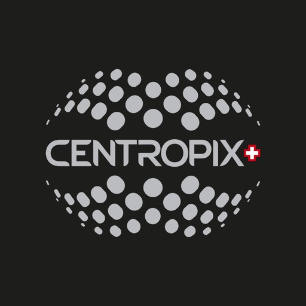
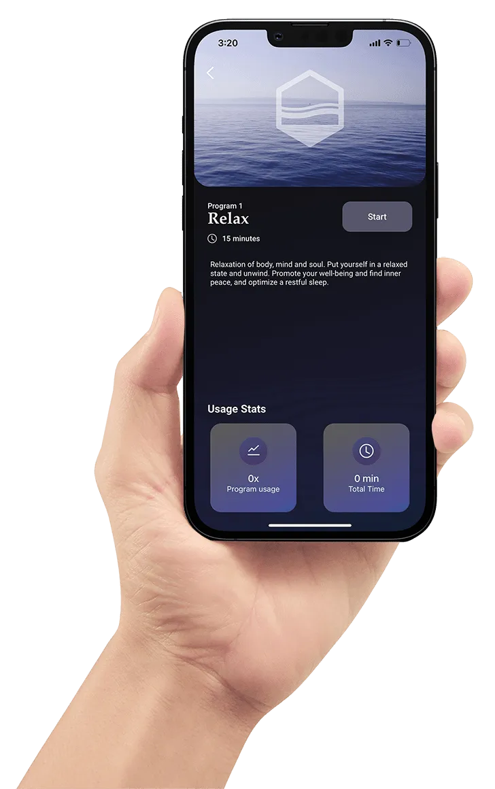

Bring the idea to life.
Native Swift interfaces, application architecture, and the backend connections your product needs.
UMER AYUB iOS DEVELOPER
Native interfaces. Reliable integrations. App Store delivery.
I help teams turn ambitious ideas into polished iOS products.
Swift & SwiftUI · MVVM · Connected devices · App Store delivery
FROM IDEA TO APP STORE
Native Swift interfaces, application architecture, and the backend connections your product needs.
Thoughtful layouts, smooth animations, and responsive behavior across the app lifecycle.
Clean, maintainable code and hands-on experience taking iOS applications to the App Store.
SELECTED WORK
Five projects. Different product challenges.
One focus: a better native experience.

Wellness. Within reach.
A native companion for KLOUD and BUBBLE. Bringing device controls, personal programs, and everyday wellness together in one intuitive experience.
View on the App Store
A radio system controller for teams that depend on reliable wireless communication.
Customizable field data collection and analytics for researchers, scientists, and educators.
A companion app connecting fans with new videos and notifications about nearby shows.
Onsite and remote IT support requests with a clear workflow and transparent cost control.

THE PERSON BEHIND THE PIXELS
I’m Umer, an iOS developer based in Lahore. My work spans connected wellness, team communication, field research, entertainment, and on-demand services. I bring that range of product experience to every new challenge.
I work across the full application lifecycle: native UI, networking, local data, backend development, and App Store delivery. I care about readable, testable code, clear architecture, and details that make a product easier to use and maintain.
View my résuméiOS Developer
Mobile App Developer · iOS
TECHNICAL EXPERTISE
From the interface to the infrastructure.
A toolkit built around shipping native apps.
Interfaces that belong on iOS.
Build native screens and adaptive layouts with the Apple frameworks at the core of my work.
A foundation that can evolve.
Structure applications around clear responsibilities, readable code, and patterns that support long-term maintenance.
Connect the experience.
Connect app interfaces to backend services, handle API responses, and build the server-side functionality behind the product.
Put data in the right place.
Work with local persistence and backend data stores to support the way an application saves and retrieves information.
Keep the experience moving.
Manage background work and concurrent tasks with attention to application responsiveness and the user interface.
Make the details feel natural.
Create polished transitions, responsive layouts, and visual feedback that make an interface intuitive to use.
Beyond the standard screen.
Build location-based interfaces and immersive experiences using mapping and augmented reality frameworks.
From development to release.
Work with version-controlled code and bring native applications through development to App Store delivery.
Bridge hardware and software.
Connect iOS experiences to Bluetooth peripherals and build the app-side interactions that make connected products usable.
Support the complete journey.
Integrate in-app purchases and notifications to support how people discover, return to, and use a product.
Confidence in every change.
Use automated tests and testable application structure to check behavior and support changes as a codebase grows.
Coordinate complex app behavior.
Handle asynchronous work and changing data with Swift concurrency and reactive programming tools.
HOW I APPROACH THE WORK
Start with the people using the app, the problem it solves, and the technical requirements behind it.
Connect the interface, architecture, and data flow so the experience works as a coherent whole.
Pay attention to layouts, transitions, and application behavior. The small details deserve real care.
Keep code readable and maintainable, support App Store delivery, and leave room for the product to grow.
HAVE SOMETHING IN MIND?
Building a new app or growing your iOS team?
Let’s talk about what you need and how I can help.